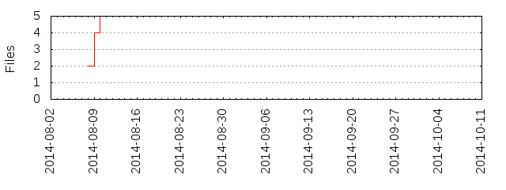

Files
General
Activity
Authors
Files
Lines
Tags
Total files
5
Total lines
1935
Average file size
17833.20 bytes
File count by date

Extensions
Extension
Files (%)
Lines (%)
Lines/file
c
1 (20.00%)
1054 (54.47%)
1054
conf
1 (20.00%)
49 (2.53%)
49
md
1 (20.00%)
146 (7.55%)
146
txt
1 (20.00%)
673 (34.78%)
673
yml
1 (20.00%)
11 (0.57%)
11